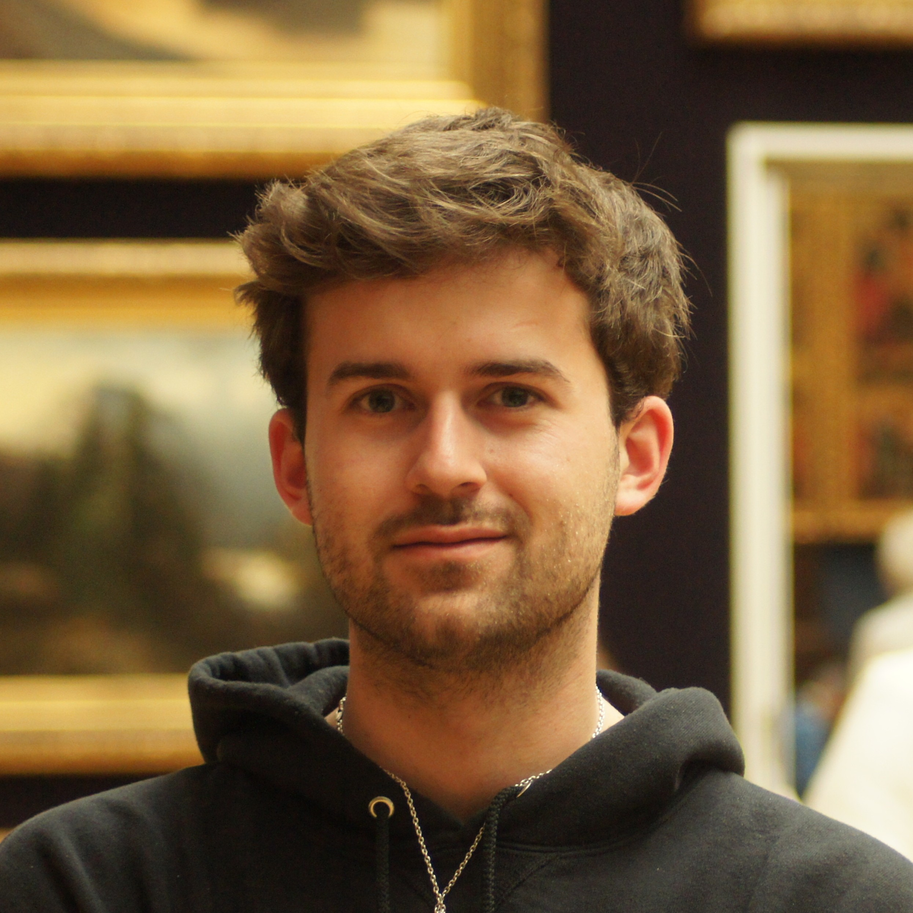

Niels Saes
AI Engineer | Experienced Coder | Passionate about everything Data
I'm currently studying my Masters in Data Science & Artificial Intelligence at Eindhoven Technical University.
4+ years of data science work experience
Current Projects
Mystery Project #1
Building and deploying a React Native application for iOS and Android using Expo.
This project is a data-driven solution built using Expo, Firebase and LLMs, designed for users to interact with LLM output through dynamic prompting.
Past Projects
Galaxy Classifier
Developed a Python-based project utilizing machine learning algorithms to enable amateur astronomers to accurately classify galaxies using spectroscopic data from the Sloan Digital Sky Survey (SDSS).
And More...
Experience
LLM Engineering Intern Statistics Netherlands (CBS) (January 2025 - July 2025)
At my graduation internship at the CBS, I will implement open-source Natural Language Processing techniques, open-source LLM's and vector database principles to enhance data querying for this government institution. The goal is to make a Proof of Concept that will kickstart a full project on better internal data querying.
- Researching and deploying open-source LLM methods and models in a highly complex and confidential environment
- Design and implement an IT solution for a large government institution that manages all the data the government needs
- Providing the CBS with AI knowledge and making detailed and understandable software documentation
I received a Satisfactory (6.9 out of 10) for my internship.
IT Project Manager / Data Analyst Buro Matthijs (April 2024 - April 2025)
At BuroMatthijs I managed and designed a projects' requirements and tasks for developers for client solutions. On top of this, I built dashboards for clients operating in varying industries, such as: horticulture, e-commerce and nutrition.
- Designing and implementing IT solutions for SME's
- Designing and implementing client dashboards
- Requirements management with our software developers
Information Technology Intern at ASML (September 2023 - January 2024)
Analyzed the implementation of AI for defect detection in the supply chain.
- Collaborated with internal and external stakeholders to ensure project alignment and execution through active communication.
- Quantified the cost of defects for ASML by aggregating and analyzing supply chain data from SAP & other sources.
- Researched the applicability of advanced machine learning algorithms (f.e. instance segmentation) to detect defects.
- Performed a market research on AOI solution providers.
- Advised ASML through a comprehensive business case.
I received an Outstanding (10 out of 10) for my internship.
Full Stack Developer at Clonable (March 2022 - September 2023)
As the Project Lead and Full Stack Developer at Clonable, I had the opportunity to design and build the current website from the ground up.
- Incorporated web-designs by a Product Designer.
- Implemented a CMS system for blogs and other website content (Strapi.js).
- Coordinated with stakeholders from design to implementation.
My Hobbies
.png)
Playing Classical Trombone
I have been playing the trombone for the last 15 years and recently at a pretty high amateur level. Since then I have played wonderful pieces and music together with amazing people. Ensembles I play(ed) in include:
- The Dutch Film Orchestra
- Koninklijke Harmonie Oefening & Uitspanning
- ESMG Quadrivium Auletes & Ensuite
- University of Waterloo Jazz & Orchestra ensembles
Travelling the World
I'm passionate about traveling the world and immersing myself in diverse cultures. My experiences have been enriched by studying abroad for a minor in Canada, where I had the opportunity to explore new perspectives, connect with people from different backgrounds, and expand my global awareness.
Contact Me
Feel free to reach out through LinkedIn:
Get in Touch